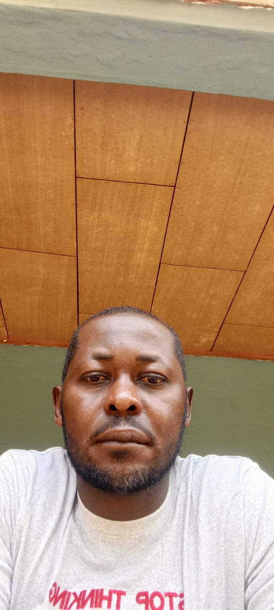

Ndipen Kelly Pride Forkeng
HND - Administrations

George Shu Waa Che
CAPI-1990, First Degree in Psychology -2004, DIPEN 2 -2007

Jude Forkala Foncham
CAPI, First Degree in Psychology, 33 years of teaching experience

Floryah Mary Manyi
PRE-NURSERY

Tendongafac Anita
NURSERY 1

Ngimanju Glida Nkengafac
NURSERY 2

Achamoh Gizel
CLASS ONE

Nchuba Solange Anumendem
CLASS TWO

Mirabel Sheri
CLASS THREE

Ndifor Loveline Ngufuet
CLASS FOUR

Yvonne Indah Tencor
CLASS FIVE

Sangye Lea Endah
CLASS SIX

Kenfack Stalone
M1

Tsamo Jiotsa Silvia Cordy
M2
Dongmo Tawa Adelaide
SIL

Sona Floriane Carelle
CP

Kiaribo Prudence Majolie
CE1 & CE2

Imele Mawamba Marcede
CM1

Tchio Jonas Dorex
CM2

Nguefack Nago Nathael Periclece
ICT

Azwe Blessing Fon
Cafeteriate

Muki Helen Ndah
Sanitation
Tsafack Pierre
Yard Cleaner

Tamhizem Marcus
Driver

Abewo Elie
Head Driver- 3 Straight Labour Medals

Ngoune Sonfack Yves Etienne
Driver
